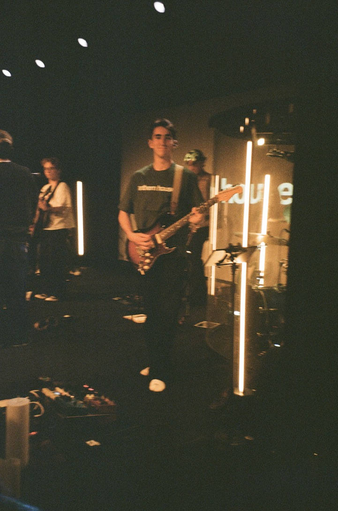

Hi, I'm Christian Hart
I write code for a living and take photos because I can't really help it. Most of my time right now goes into Current, an app I'm building that quietly connects the notes you write to the people and projects they're actually about — mostly because I got tired of losing my own ideas in a pile of unrelated notes apps. Before that it was ScanToPCC and a healthcare access-management tool, so I've spent a lot of hours thinking about the same problem in different clothes: how do you keep information from just getting lost.
Outside of that, I'm usually out with a camera, or up front playing guitar at church on Sundays. The guitar thing is less about the music and more about the reason I'm up there in the first place — leading worship is genuinely one of my favorite parts of the week.